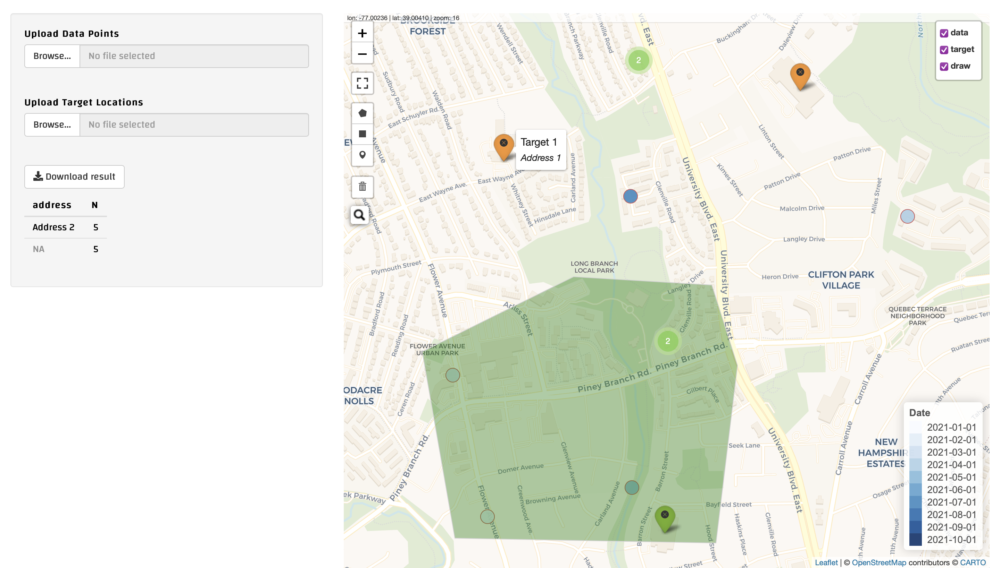
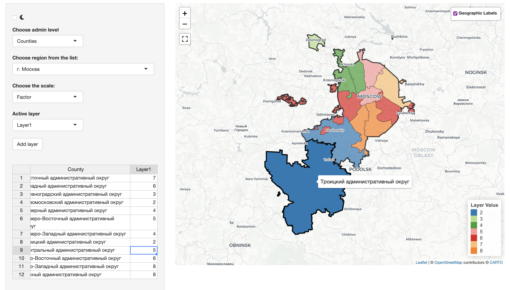
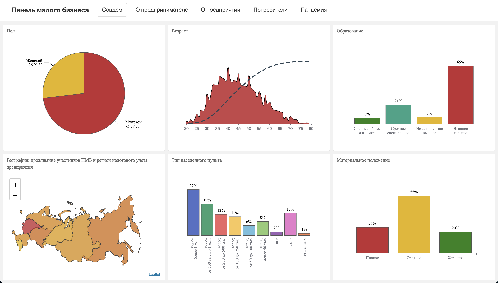

PORTFOLIO
Feel free to click on the projects to see a live demo.

Manual Geofencing for Logistics Data
- What: Specific tool performing post-factum geofencing or "data-affiliation".
- Why: There were data points from delivery stops and there were target points – destination
shops. It was often impossible to automatically understand if a delivery stop belonged to a certain shop
(the point was located right between two shops with equal distances to both) or was simply a random stop.
Hence the manual geofencing tool was developed so that a person with domain knowledge could manually
assign stops to relevant shops.
- Pecularities: Map is prepopulated with randomly generated data for demo purposes, which is
replaced once actual data is uploaded. + Use of Leaflet-Shiny events to draw polygons (or "fences") which
changes initial data in accordance with contained data points.
- Tools: R (Shiny, Shinyjs, Leaflet, sf, dplyr), CSS.
Check

Flexible Choropleth Map Maker
- What: Tool enabling users to create their own choropleth maps of Russia with two admin
levels.
- Why: Enable "no-code" coworkers access Leaflet interactive mapping via GUI with some extent
of flexibility: choose data, choose palette type and colors, add layers and their values. Initially used
to visualize sample stratification, but grown into a flexible mapping tool.
- Pecularities: Custom JS code to update polygons’ color without redrawing them. + Dark mode
switch. + Optimized geographical data: simplified and stored in RDS. + Tweaked Chukotka Region (no
disruption at lng == 180 – check out the default data for comparison: Chukotka Autonomous Okrug.
- Tools: R (Shiny, Shinyjs, Leaflet, sf, rhandsontable), JavaScript, CSS.
Check

Dynamics of "CT lung screening" searches
- What: Map showing the dynamics of meta-covid internet search – data from Yandex search
engine. The visualization represents both absolute and relative interest in the topic.
- Why: Detect patterns in covid searches during the pandemic and compare them with official
decease statistics.
- Pecularities: Custom JS code to update polygons’ color and labels without redrawing them. +
Highly optimized polygon data – simplified geometries stored in RDS. + Shiny and Leaflet integration –
chart data changes reactively based on map clicks. + Data parsed from Yandex Wordstat (a task complex
enough for a separate project).
- Tools: R (Shiny, Leaflet), JavaScript.
Check

Survey Panel of Russian Entrepreneurs
- What: Interactive dashboard of a Survey Panel by Public Opinion Foundation (Moscow,
Russia). Updated weekly.
- Why: Visualize Data, provide clear understanding of the Panel state for people both inside
and outside of the company.
- Pecularities: Extensive use of Echarts API with the help of echarts4r package. + Tooltip
customization with JS code.
- Tools: R (R Markdown, flexdashboard, echarts4r).
Check

Simple database interface
- What: Simple DB interface for previewing data and writing custom SQL queries.
- Why: Easy access to local SQLite DB via web interface.
- Pecularities: SQL syntax highlighting in query input as well as data-aware completion
suggestions.
- Tools: R (Shiny, Shinyjs, shinyAce, DBI, DT), SQLite.
Check

Map of Polling Stations in Russia
- What: Map containing markers with Polling Stations in multiple Russian regions.
- Why: Fast and easy access to locations and basic information about Polling Stations.
- Pecularities: Interactive R Markdown document with Shiny runtime + Data scraped & parsed
from regional Central Election Commission web sites.
- Tools: R (R Markdown, Shiny, Leaflet, rvest, RSelenium).
Check